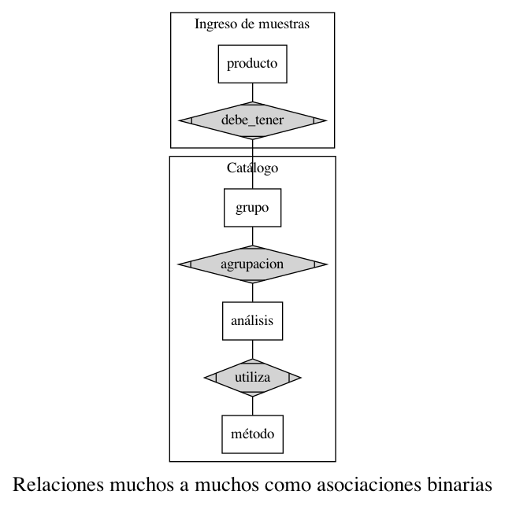
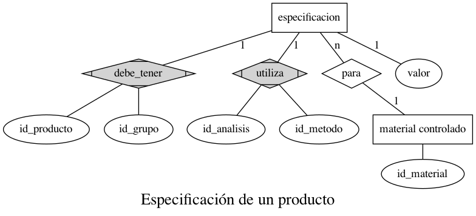
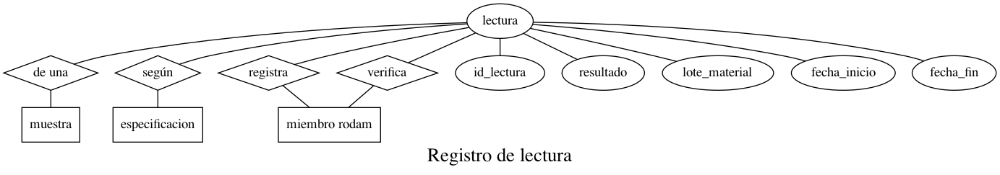

Documento de Diseño¶
- author
Jonatan Ahumada Fernández
- contact
- date
<2021-01-19 Tue>
Introducción¶
Aquí se documenta el diseño del módulo laboratorio. Para ver qué funcionalidades debe cumplir, se debe revisar la Especificación de Requerimientos.
Diseño de base de datos¶
La parte más crítica del sistema se considera el diseño de la base de datos, pues eventualmente reemplazará parte del sistema documental de Rodam Análisis. Esta será la capa sobre la cual se construyan interfaces gráficas. Es, entonces, importante que las relaciones y las tablas sean suficientes.
El diseño conceptual y el mapeo de los diagramas ER hacia los modelos relacionales es un proceso costoso en tiempo. Por las necesidades del desarrollo, se han optado por ciclos de desarrollo cortos. Por ende, aquí se expondrán solo los diagramas para las casos de uso más críticos.
El ingreso de muestras¶
El ingreso de muestras es un proceso bastante frecuente en el laboratorio y debe automatizarse al mayor grado posible. En el ingreso se relaciona un producto que proviene de un cliente del laboratorio con uno (o más) servicios que ofrece el laboratorio.
Un producto, casi siempre, es objeto de la misma serie de procedimientos, sujetos a los mismos parámetros. La asociación del producto con los servicios del laboratorio, por lo tanto, se decidió hacer una vez. Cuando el mismo cliente requiera un analisis para ese producto en particular, el laboratorio ya sabe qué procediemtos hacer sobre ese producto. A eso se le llama la especificación de un producto. Por otro lado, a la instancia particular del producto que se somete a los procedimientos, se le llama muestra del producto.
Aquí se presenta un diagrama entidad relación ajustado al caso de uso particular del ingreso de muestras.
Notemos que los rombos con esquinas triangulares denotan relaciones de muchos a muchos. La técnica general de represtar ese tipo de relaciones es usar una tabla de asociacion en el modelo relacional. Por ende, si se revisa el Dominio.py se encontraran esas relaciones construidas como tablas. Esas tablas tienen además una llave sustituta (surrogate key).
La función de la llave sustita es doble. Por un lado, codifica una 2-tupla a 1-tupla.
Por otro lado, Por las necesidades impuestas en el proceso de ingreso, era deseable restringir las opciones de la persona de ingreso a solo relacionar el producto con ciertos análisis dependiendo de los grupos que tuviera la especificacion. Es decir, la responsabilidad de la persona de ingreso se debe minimizar y, reciprocamente, el sistema debe capturar correctamente los servicios (el catálogo que ofrece el laboratorio). En general, no es posible construir este tipo de relaciones semánticas en relaciones de grado superior. Aún si se pudiese, se considera una «buena práctica» transformar las relaciones de orden superior en relaciones binarias. En general, las tablas presentan mucho menor redundancia y la búsqueda de llave fóraneas en la API de una aplicación cliente será menos dispendiosa.
Ciertas herramientas, por ejemplo, Oracle Express o las formas de Microsoft Access solo construyen vistas entre dos tablas y no más.
La especificación, por lo tanto, no depende, de las entidades base (producto, grupo, analisis, metodo), sino de relaciones entre ellos, de la siguiente manera:
Así, mismo, una lectura se compone por :
